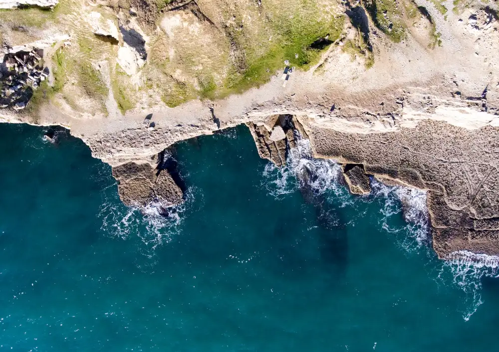

Sea the Value
Valuing Marine Biodiversity for use in Decision Making

Sea the Value is an interdisciplinary research project designed to create novel, policy-relevant, pluralistic values for marine biodiversity. Currently, Ecosystem Services assessments often disregard differences in habitat extent, condition and quality, and the effect these factors have on the services performed. Furthermore, complex pluralistic values (reflective of multiple perspectives/priorities) are rarely well understood, and often disregarded in decision-making processes. Our project seeks both to plug this critical evidence gap, supporting the integration of biodiversity values into decision-making at all levels. Combining this information, we will apply these new values to co-develop scalable green finance options, leading to a transformative shift in our understanding and utilisation of the economics of biodiversity.
For more information, see our project website.
Environmental Economics
Ecosystem Services
Natural Capital
Pluralistic Value